Ohne Zurücklegen
Mit einem KI-Tutor lernen
Ein KI-Tutor erklärt dir diese Seite und hilft dir bei den Übungen. Wähl deinen Assistenten:
Mit Claude öffnen Mit ChatGPT öffnen Mit Le Chat öffnen
Du nutzt dein eigenes Konto beim Anbieter. Der Assistent ist kein Angebot von lernapps.net: lernapps liefert nur Inhalte und Übungen. Die Wahl gilt für alle Seiten, nur auf diesem Gerät.
Warum?
Ob eine gezogene Kugel zurück in die Urne kommt oder nicht, ändert die ganze Rechnung. Genau hier passieren die meisten Fehler: Der Nenner bleibt 6, obwohl nur noch 5 Kugeln drin sind. Wer den Unterschied einmal gesehen hat, vergisst ihn nicht mehr.
Regel
- mit Zurücklegen
Die gezogene Kugel kommt zurück in die Urne. Jeder Zug ist wie der erste, die Wahrscheinlichkeiten bleiben auf allen Stufen gleich.
- ohne Zurücklegen
Die gezogene Kugel bleibt draußen. Nach jedem Zug ist eine Kugel weniger in der Urne.
Ohne Zurücklegen gilt:
- Der Nenner wird bei jedem Zug um 1 kleiner (6 → 5 → 4).
- Der Zähler einer Farbe wird nur dann um 1 kleiner, wenn vorher eine Kugel dieser Farbe gezogen wurde.
Die Zweige der zweiten Stufe hängen also davon ab, was in der ersten Stufe passiert ist.
Beispiel
Die erste Kugel ist rot
Urne mit 3 roten, 2 blauen und 1 gelben Kugel (6 Kugeln). Die erste gezogene Kugel ist rot.
| 2. Kugel | mit | ohne |
|---|---|---|
| rot | 3/6 | 2/5 |
| blau | 2/6 | 2/5 |
| gelb | 1/6 | 1/5 |
Ohne Zurücklegen fehlt eine rote Kugel: Bei rot werden Zähler und Nenner kleiner, bei blau und gelb nur der Nenner.
Damit wird zum Beispiel
- mit Zurücklegen ,
- ohne Zurücklegen .
Bild
Urne vorher mit 6 Kugeln und nachher mit 5 Kugeln; dazwischen die gezogene Kugel
Quelle: Eigene Darstellung der Mathe-Karte. Lizenz: MIT.
Mit Zurücklegen
Quelle: Eigene Darstellung der Mathe-Karte. Lizenz: MIT.
Ohne Zurücklegen. Oben die Urne vor dem ersten Zug mit 6 Kugeln (3 rote, 2 blaue, 1 gelbe), daneben die gezogene rote Kugel und die Urne danach mit 5 Kugeln (2 rote, 2 blaue, 1 gelbe). Darunter zwei Bäume. Mit Zurücklegen hat die zweite Stufe dieselben Zweige wie die erste: rot 3/6, blau 2/6, gelb 1/6. Ohne Zurücklegen steht nach rot: rot 2/5, blau 2/5, gelb 1/5. Der Pfad rot-blau ist in beiden Bäumen orange: mit Zurücklegen 3/6 · 2/6 = 1/6, ohne Zurücklegen 3/6 · 2/5 = 1/5.
Quelle: Eigene Darstellung der Mathe-Karte. Lizenz: MIT.Video dazu
- Wie man einen Baum aufbaut, zeigt das Video auf der Seite Baumdiagramm.
- Noch eine Erklärung: Pfadregeln bei serlo.org
Übung
Aufgabe Nr. 1
Aufgabe Nr. 1
In einer Urne liegen 1 rote, 2 blaue und 3 gelbe Kugeln (6 insgesamt). Du ziehst zweimal. Wie groß ist P(rot, dann blau) – (1) mit Zurücklegen und (2) ohne Zurücklegen?
Das Bild zeigt die Urne vor und nach dem ersten Zug (rot gezogen) und darunter die Bäume mit und ohne Zurücklegen; der Pfad rot-blau ist orange.
- (1) P(rot, dann blau) mit Zurücklegen = …
- (2) P(rot, dann blau) ohne Zurücklegen = …
Lösung
Mit Zurücklegen: 1/6 · 2/6 = 1/18
Ohne Zurücklegen: 1/6 · 2/5 = 1/15
Übung
Drei Beispielaufgaben, jede mit ihrer Lösung:
Aufgabe Nr. 1
In einer Urne liegen 3 rote und 3 blaue Kugeln. Du ziehst ohne Zurücklegen. Die erste Kugel ist rot. Wie groß ist die Wahrscheinlichkeit, dass die zweite Kugel blau ist? Gib sie als Dezimalzahl an, auf zwei Nachkommastellen gerundet.
Tipp
Wie viele Kugeln liegen nach dem ersten Zug noch in der Urne, und wie viele davon sind blau?
Lösung
- Nach dem ersten Zug: 3 + 3 − 1 Kugeln, davon 3 blaue.
- P(2. Kugel blau) = 3 durch die übrigen Kugeln ≈ 0,6.
Richtige Antwort: 0,6
Aufgabe Nr. 2
In einer Urne liegen 3 rote und 5 blaue Kugeln. Du ziehst ohne Zurücklegen. Die erste Kugel ist rot. Wie groß ist die Wahrscheinlichkeit, dass die zweite Kugel blau ist? Gib sie als Dezimalzahl an, auf zwei Nachkommastellen gerundet.
Tipp
Wie viele Kugeln liegen nach dem ersten Zug noch in der Urne, und wie viele davon sind blau?
Lösung
- Nach dem ersten Zug: 3 + 5 − 1 Kugeln, davon 5 blaue.
- P(2. Kugel blau) = 5 durch die übrigen Kugeln ≈ 0,71.
Richtige Antwort: 0,71
Aufgabe Nr. 3
In einer Urne liegen 3 rote und 4 blaue Kugeln. Du ziehst ohne Zurücklegen. Die erste Kugel ist rot. Wie groß ist die Wahrscheinlichkeit, dass die zweite Kugel blau ist? Gib sie als Dezimalzahl an, auf zwei Nachkommastellen gerundet.
Tipp
Wie viele Kugeln liegen nach dem ersten Zug noch in der Urne, und wie viele davon sind blau?
Lösung
- Nach dem ersten Zug: 3 + 4 − 1 Kugeln, davon 4 blaue.
- P(2. Kugel blau) = 4 durch die übrigen Kugeln ≈ 0,67.
Richtige Antwort: 0,67